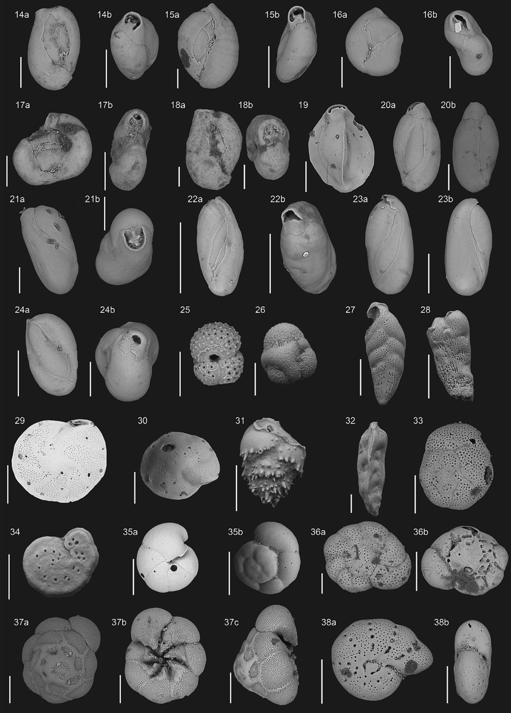

Holocene paleor-redox conditions in a microbial dolomitic lake using benthic foraminifera as bioindicator

Resumo em Português
O lago costeiro Brejo do Espinho (LBE) é um dos poucos lugares no mundo onde a dolomita [CaMg(CO₃)₂] está precipitando no ambiente moderno sob processos induzidos microbiologicamente e condições de baixo oxigênio. Utilizamos a morfometria de poros do foraminífero Ammonia cf. A. veneta para avaliar a dinâmica de paleo-O₂ durante a fase deposicional dolomítica que ocorreu no LBE no Holoceno tardio. A estrutura da comunidade de foraminíferos também foi investigada, e os resultados foram comparados à composição isotópica bulk de carbonatos, carbono orgânico total (COT) e difração de raios X (DRX) dos sedimentos.A matriz de correlação (método de Spearman) mostrou que os parâmetros morfométricos dos poros do teste de Ammonia apresentaram correlações significativas com os dados bióticos e geoquímicos gerais, com a área do poro exibindo associação relativamente mais elevada. Os poros do teste de Ammonia foram controlados principalmente pela degradação da matéria orgânica (área do poro-COT, r = −0,84), e a densidade de foraminíferos mostrou-se influenciada pelas variações de oxigênio, com maior abundância nos intervalos de maior porosidade (área do poro-N, r = 0,82), indicando efeito direto da penetração de oxigênio na dominância de espécies. Os dados também revelam comportamento tolerante das espécies bioindicadoras de baixo-O₂ Quinqueloculina laevigata e A. veneta. A compreensão das interações microorganismo-mineral é fundamental para a interpretação de registros paleoambientais, e os dados fornecem forte suporte para o acoplamento de análises de assembleias e poros como bioindicadores de paleo-O₂ em contextos costeiros paleoredox.